从资料原图看构件应该长什么样，再对照当前模型。覆盖现行登记中的每个名称条目与待绑定来源项目，独立列出必要变体；如实显示占位包络和证据缺口。
V001 · 2026-10-17 · 待 PO 审核 / 不代表整殿完整形态已获验证
79 个页面
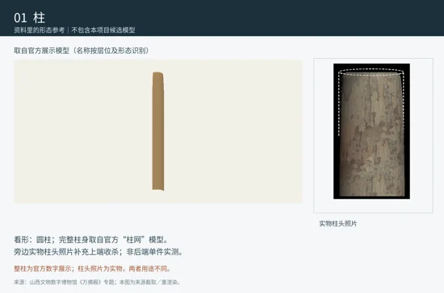
圆形柱身有资料支持；卷杀、侧脚、生起、柱头及柱脚细部并未由这一圆柱 Master 完整表达。
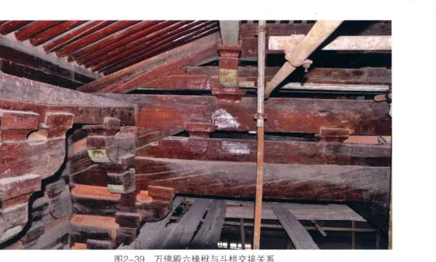
现有等截面参考体没有完整梁端、梁身变化与现场不规则轮廓；1000mm 为项目参考长度，不是整梁实长。
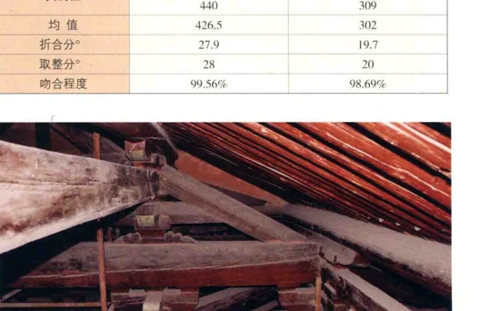
Master 为等截面参考体；全梁历史形态未成立。前端 C01 的批准仅覆盖局部端部设计，不能扩大到全梁及后端。
截面统计与层位可核对；Master 的直棱包络未表达照片中的端头、梁身变化与承托节点。
东西缝与山面必须分开看；山面厚度未知。参考直棱体没有完整端部及现场形变；两种截面不能相互替代。
上下承托角色有依据；两种现有外形属于来源引导的工程候选。尺寸、完整轮廓和隐蔽榫卯未知，不视为实测真值。
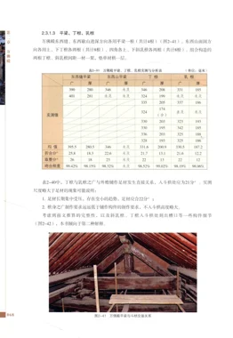
实测族截面不等于逐根尺寸；端部骑搭与隐刻未在等截面参考体中完整表达。
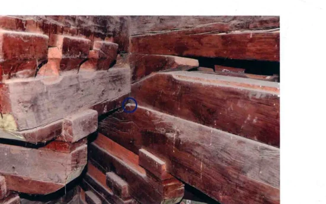
直棱参考体没有图中交接与端部细节；斜乳栿、平乳栿位置差别不自动构成已证实的形态变体。
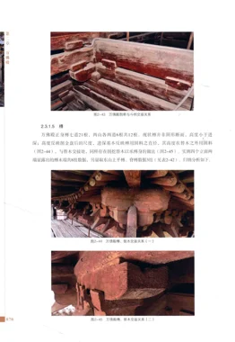
已知构件族及山面位置；其余位置和端点仍有缺口。直棱参考长度不证明全殿各件轮廓。
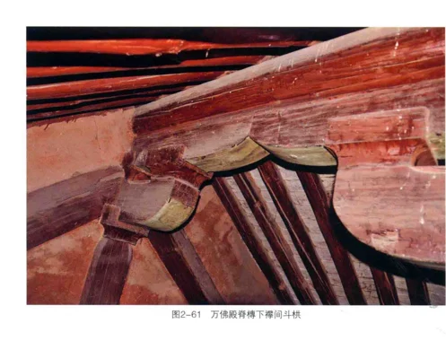
Master 仍为矩形包络，不能当作真实槫身截面。跨榀三槫批准的是局部装配设计，不能替代逐件测绘外形。
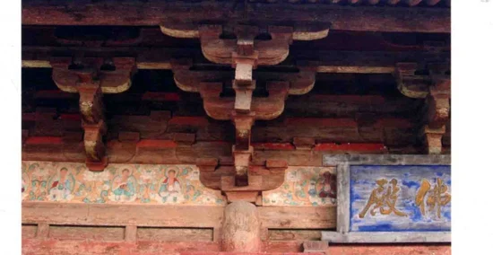
现有包络反映参考截面；柱间端部、收分、隐蔽交接与现状形变未完整表达。
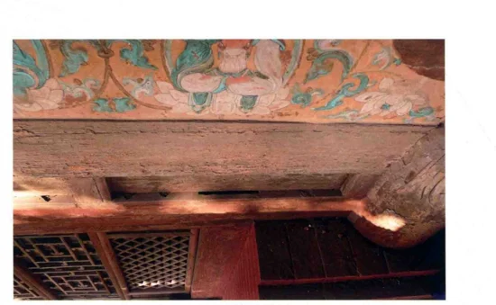
族截面与分布有据；端部榫接、轮廓变化与后世修缮状态未完整落实到包络体。
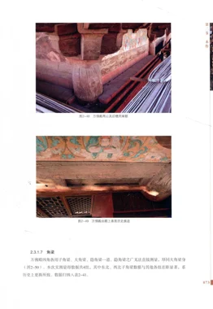
参考体不能显示翼角梁真实斜向、端头与承托变化；不可从单一包络推定四角完全同形。
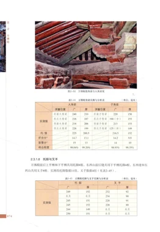
矩形包络没有角端起翘、套兽连接及隐蔽端部的完整证据。
登记存在与推定数量不等于已获得完整轮廓；不同来源对角部名物/边界的解释需分层，当前无法确认独立完整形态。
Master 为矩形包络，缺完整斜撑端部与实际承托切口。报告公布均值237.1×153.7与可见行复算234.1×154.1存在已登记冲突；本轮不改尺寸。
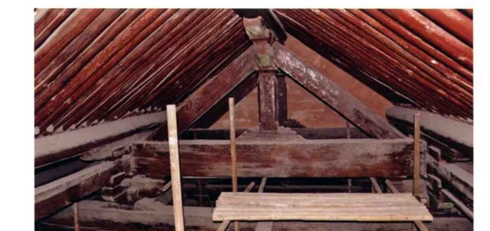
矩形参考体未独立表达上下端与脊部连接。当前装配角度、收落面属于局部工程设计，不能当成原物榫卯。
实测截面与出现位置有据；等截面参考体未完整落实柱端、承托座与历史全长。
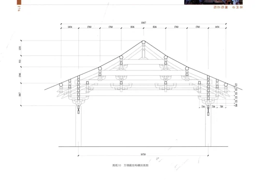
正身双向与45°斜出需区分；四角对称不能直接证明每一件相同。现有局部装配不是完整转角铺作。
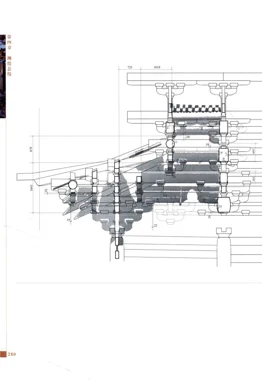
这是组合单元，不是一个木构件；现有局部接触验证没有证明完整七铺作形态与全部隐蔽连接。
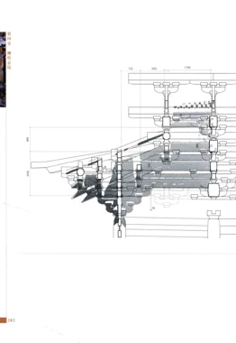
这是组合位置；不得把底斗、栱、斗和枋合算为一个真实物理木件。完整组合尚未批准。
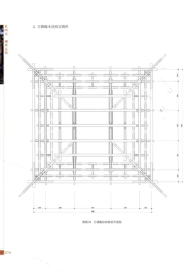
方向单元是立面计数及定位概念；转角同时服务两个方向，不能转成新增物理件。
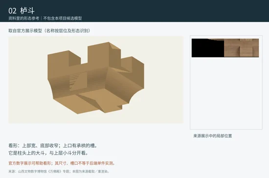
现有 Master 仅为8顶点6面的长方体包络，未表现斗耳、欹面与开口。C02 局部轮廓批准不能自动升级为全殿 Master。
有分段轮廓的现有模型比单纯长方体更具体；槽口与隐藏连接仍缺直接证明，完整实物外形只部分符合。
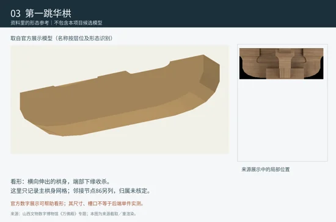
简化弧形有同建筑来源引导；单材/足材不能混同。214.2mm局部包络与完整足材之间缺切割范围证明，不能直接拉伸到316.4mm。
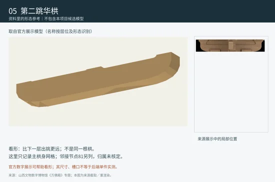
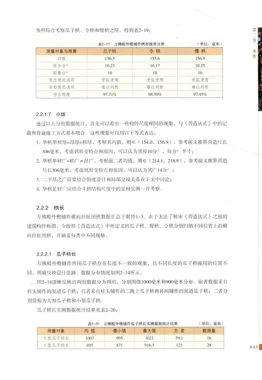
Master 为简化曲线，尚未按原物精确拟合。局部装配中“进深华栱/进深令栱”的身份对应未闭合，不在此静默改名。
大/小型必须分别显示。现有曲线为来源引导简化轮廓，端部卷杀与榫槽未完成实测拟合。
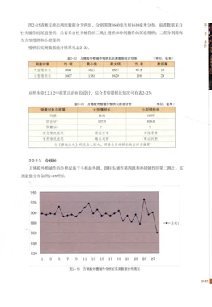
大型慢栱有独立尺寸和简化曲线；端部卷杀与精准历史轮廓未证明。
小型不能以大型缩放图直接冒充；查看本 Master 的小型变体。端部和隐蔽交接仍待对应原图。
小型变体独立展示；形态由来源引导简化，未声称每件都与族均值一致。
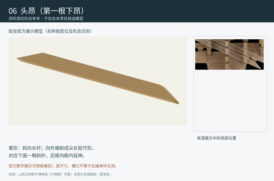
头昂与二昂分型；参考控制跨度不等于整材全长。隐蔽搭接与完整尾部未知。
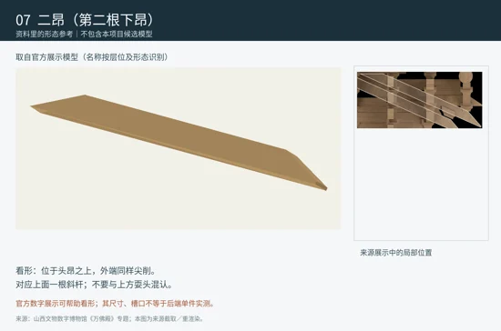
简化二昂不能以头昂截面替代。已登记族样本口径冲突仍保留；全材长与隐藏交接未证明。
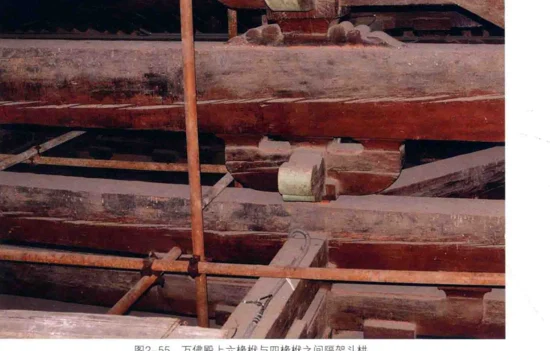
不能把内槽栱件215.0×153.6mm统计作为襻间枋统一截面；独立完整形态和逐件模型未建立。
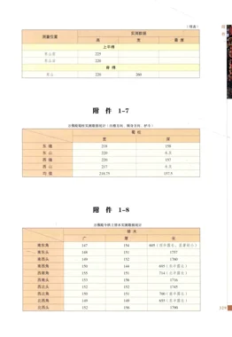
24处是装配位置，不是24个同形实体；应分别辨识栱、斗、替木和枋。
23条是测量样本边界，不是23件完整实体；对应可浏览的“替木实体族”页面。
椽、飞子与翼角椽需要分别辨识；36个旧工程代理不代表真实椽数。截面、间距和翼角逐根几何未知。
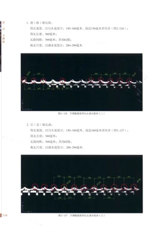
南坡的瓦陇登记是排列统计，不是筒瓦物理件数；当前没有逐瓦批准模型，端部、搭接与逐坡形变未建立。
北坡的瓦陇登记是排列统计，不是筒瓦物理件数；当前没有逐瓦批准模型，端部、搭接与逐坡形变未建立。
东坡的瓦陇登记是排列统计，不是筒瓦物理件数；当前没有逐瓦批准模型，端部、搭接与逐坡形变未建立。
西坡的瓦陇登记是排列统计，不是筒瓦物理件数；当前没有逐瓦批准模型，端部、搭接与逐坡形变未建立。
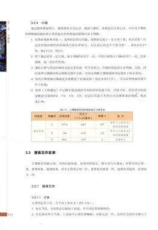
整条脊线与通脊砖不是同一粒度；真实脊饰、拼接和砖块独立几何未落实。
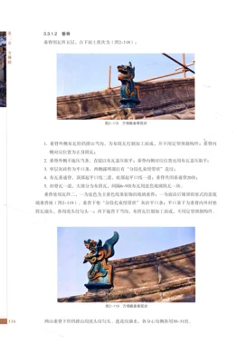
每条垂脊与垂通脊砖数量分开；现有屋面代理不表达脊砖与端部构造。
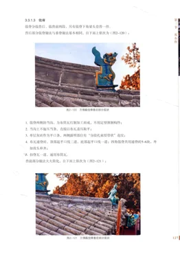
真实戗脊含找头与脊饰组合；未建立逐件可审核模型。
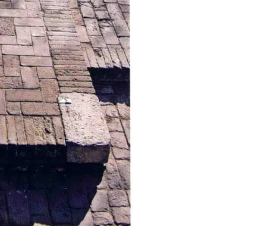
这是整体系统；边缘铺砌可见，内部构造未知，不能用台基盒体说明真实内部。
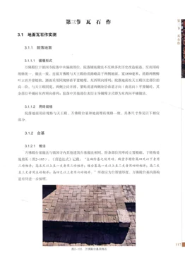
可确认转角设置；当前无独立可验证角石模型和逐角完整轮廓，保留缺口。
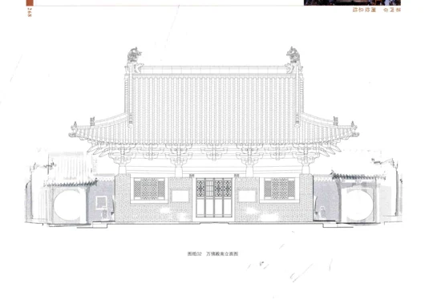
这是开口而非木件；现状分格可见，门框断面和完整门扇尺寸未知。
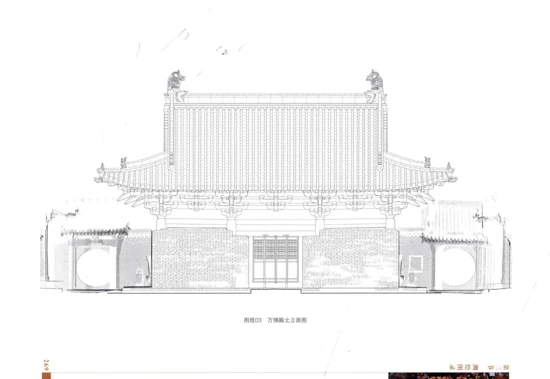
北门洞位置有据；不要用南门木作分格替代北门。独立木件断面与连接未知。
开口与实体木作区分；两窗及墙体关系有据，不能据立面锁定所有木框断面。
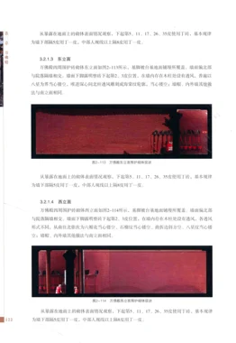
孔洞是形态明确的开口；八星、四瓣、古钱、海棠等纹样不能统一替代。尚无各纹样独立模型。
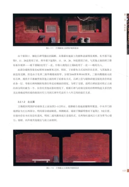
南立面门西侧两通碑有出处；无独立批准模型，碑身、额部与嵌入深度尚未闭合。
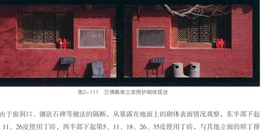
南墙局部820–880mm不能推广为四墙厚度；完整砌筑、内部与修缮叠加未建立。
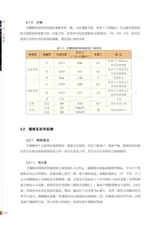
族统计277.4×134×63.1mm不代表每块砖相同；当前没有逐块批准模型。
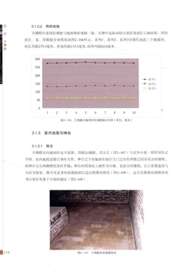
整体铺砖与材料统计有据；无逐砖批准模型，不能从统计值自动填满所有铺法。
条砖长宽有测量支持，厚度未测；端部、磨损与铺法不能由矩形轮廓推定。
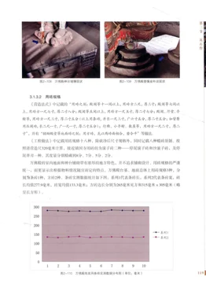
约265见方与315×305mm两类需分别保留；完整厚度与逐砖映射未建立。
神台周缘条砖及表面方砖属组合；当前没有独立完整形态模型。
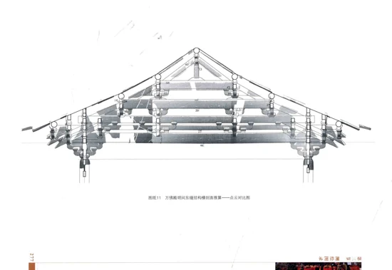
存在及层位可确认；板厚、分板和拼接缺证，未建立可验证的逐板模型。
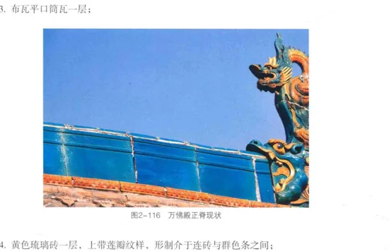
实物有龙吻形态；当前无对应雕塑几何模型，不用简单包络冒充外形。
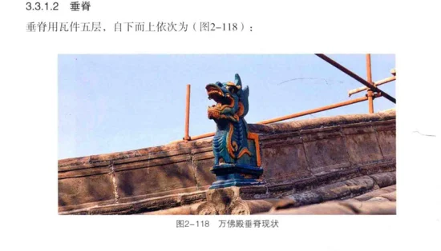
实物兽头及拼接可看；当前没有批准的对应兽件模型，完整背面和接缝仍缺。
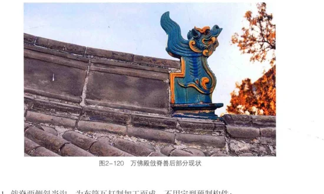
需与武士、背兽、套兽分清；当前无独立批准模型与闭合的背面形态。
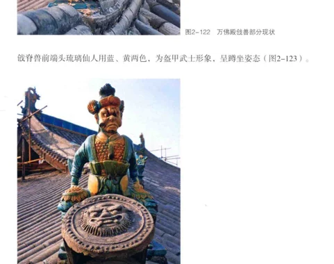
保留Registry“仙人”名称；官方专题使用“武士”。此处记录称谓差别，不据称谓改正式身份或塑造模型。
可见立面分格可供参考；木框截面、榫卯、门扇独立尺寸尚缺，未建立批准模型。
以南立面原图观察分格；当前没有批准的逐杆件模型，截面不得凭空补实。
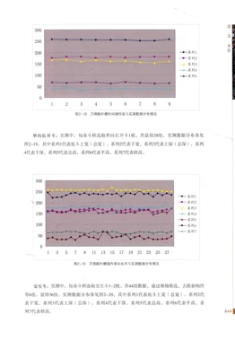
现有 Master 为长方体包络，尚未表达斗耳与单向开口；测量样本量不等于全殿件数。
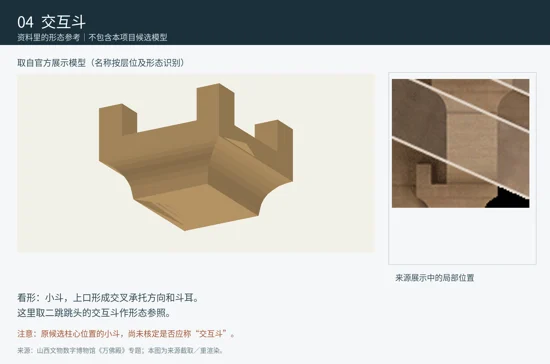
Master 的长方体包络没有交叉开口与斗耳；C02 仅局部批准，不自动形成全殿真实交互斗外形。
可见斗栱组合中有小斗；未找到可闭合的独立散斗模型/全殿清单，不把统一小斗规则补成真值。
对称型与非对称半露长不能直接互换；样本到实例、端部形态和全殿件数未闭合。
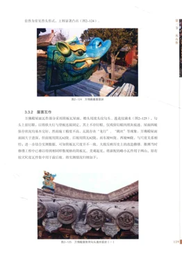
处于待绑定来源列表；照片能显示瓦面组合，但单片完整轮廓、断面与批准模型仍缺。
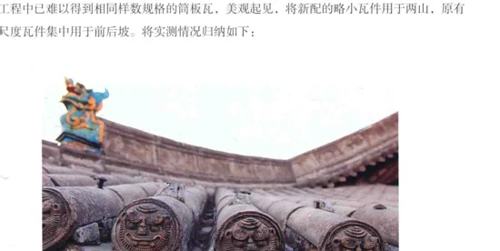
可见檐头纹饰，但未完成逐片身份、完整断面及背面证明；没有批准模型。
图像不能自动锁定每一片滴水的独立边界与尺寸；未绑定独立模型。
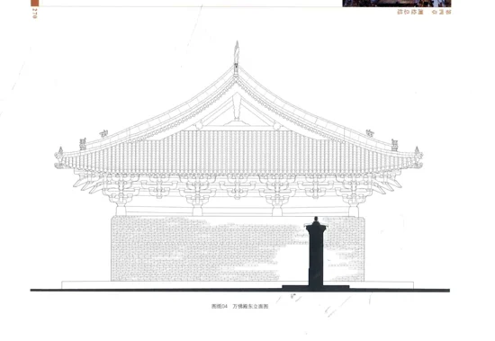
登记为待来源绑定；山面环境不等于独立博风板实测图，完整轮廓尚无法确认。
尚未取得可追溯、可明确指认万佛殿悬鱼的独立形态资料；不以别寺类比补作真值。
尚未取得可明确指认的万佛殿实物轮廓或独立模型；保留待绑定状态。
原有待绑定来源未闭合；不能把角梁或叉手端部局部设计直接称作生头木实测外形。